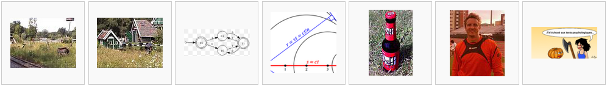

Some websites feature collections of works that use the WTFPL.
The WTFPL tag on Freecode (formerly Freshmeat) lists dozens of software entries.
The WTFPL category on Wikimedia Commons lists hundreds of images:
Below is a list of some works that use the WTFPL:
- libcaca, a graphics library that outputs text instead of pixels
- zzuf, a multi-purpose fuzzer
- Lol Engine, an experimental framework for games and 3D applications
- øbin, a pastebin implementation using encryption
- el-get, an elisp package manager for Emacs
- AP3, an Objective C 3D graphics and animation framework
- bxSlider, a responsive jQuery content slider
Know some important or noteworthy work using the WTFPL? Let us know in the comments!
http://bxslider.com/
This is not my site. Just passing it along.
My pet!
https://sourceforge.net/apps/mediawiki/mus3/index.php?title=AP3
Work in progress (a fork of mybb) forum / bulletin board software –
ARC bb
Ummmmm – you can’t do that. PHPBB is GPL; if you’re forking it, you have no choice but to remain GPL.
Hi!
Thank you so much for this. We are developing free, use-as-you-want a whole “Service Operating System” platform that is complete open source. It uses technical self-automation modularity-structure that requires open source distibution.
While I see in the future that I might have to comment on the chosen wording of the license (for one particular four-letter word), the expression that it stands for “not-so-free-software” is required in the current license hell.
I am happy to state that you just saved me half a day for putting the WTFPL up!
Eddie Machado has developed the awesome Bones WordPress Theme that uses this license!
http://themble.com/bones/
Potlatch2, map editor for OpenStreetMap http://wiki.openstreetmap.org/wiki/Potlatch_2
My Minecraft WordPress Theme is built on Bones, so I felt it appropriate to keep it on the WTFPL.
http://andrewvieau.com/2013/01/free-minecraft-wordpress-theme/
yepnope.js is using it too
Wingo – An X window manager written in pure Go (Openbox meets Xmonad).
My ebook is licenced under the WTFPL: http://www.amazon.co.uk/Using-DITA-XML-standards-ebook/dp/B00BSR8DHQ/ref=sr_1_6?ie=UTF8&qid=1363212436&sr=8-6
All of the libtom libraries use it. http://libtom.org/
My IRC library, irclib.
http://github.com/Elizacat/irclib
I also have a ton of other projects under the WTFPL.
Hello,
poche (https://github.com/nicosomb/poche), an open source read it later system, is developed under the Do What the Fuck You Want to Public License.
Have a nice day.
Nicolas
poche is now hosted here : http://inthepoche.com & http://github.com/inthepoche/poche
AnchorCMS uses it. http://anchorcms.com/
Lyvi – command-line lyrics viewer
homepage.py – simple home page generator
yeah, the stuxnet source code
https://github.com/Laurelai/decompile-dump
OpenStreetMap new javascript based editor for the masses: http://ideditor.com/
Released under wtfpl
I am the project leader at Manic Digger Server Manager(MDServerManager) Our project is released under this license see
http://anthony.strangebutfunny.net/mdmanager/
Thank you so much for this license it clears everything up
Block numbers in Twilio. Imports numbers from a text file and issues a TwiML statement to reject the call.
http://github.com/BradyOsborne/Twilio-Block-Numbers
The StartExplorer Eclipse Plugin.
http://basti1302.github.io/startexplorer/
In Eclipse, it will allow you to start the Windows Explorer on a particular package or file. If you run Linux, it will start your file manager.
The awesome NERDTREE by Martin Grenfell is also released under wtfpl: https://github.com/scrooloose/nerdtree
All the texts on my (not very interesting) blog is under WTFPL licence ! Thanks for your licence, dude.
Developed a Windows application to connect a Call of Duty server under the WTFPL: https://github.com/Otiel/CoDServerWatcher
Thank you for the great license!
The greatest jewel in my crown https://github.com/silverwizard/doubleplusunzip
i use bxslider, and found wtpfl ! nice . :D
I built a small bit of blog software that is released under WTFPL
https://github.com/samlev/blogfile/
I released PackedArray: random access array of tightly packed unsigned integers.
https://github.com/gpakosz/PackedArray
Not my program, but the Touhou Patch Center’s translator and patch program for Touhou Project games uses WTFPL too.
http://thpatch.net/wiki/Touhou_Patch_Center
Great post freecode by you ! Many Github resources is using under your licences.
Css framework: http://portal.ufsm.br/mocca/
DebianWomen Statistics has a graph of the number of female participants in the Debian GNU/Linux project. The code for the graph is linked at the bottom and is under the WTFPL.
[By the way, I love your front page picture. It took me several glances before I realized that that third guy was doing what the fuck he wanted to!]
qUaKe, a hires slideshow generator for the Atari Jaguar is also WTFPLed.
The Multi-Palette Picture file format specification for Atari ST-compatible computers includes reference conversion and display code available under the WTFPL.
diListen, a little shell script to listen to digitally imported radios is released under the wtfpl:
http://black-ship.net/~tukuyomi/stuff/public/diListen/
http://thedevelopment.biz/bodyclass/
A very simple PHP “plugin” i wrote and used WTFPL.
CoreBitcoin – Objective-C implementation of Bitcoin protocol and utils is released under WTFPL:
https://github.com/oleganza/CoreBitcoin
Incitatus OS is a great educational operating system licensed under WTFPL. Note: this is not my work.
http://pastebin.com/7MEnZZ5R
a derpibooru downloader
fixed a bug
http://pastebin.com/DuSzK4jx
freecode link: https://freecode.com/projects/derpibooru-downloader
Some small things on https://github.com/selivan: inet-failover, opvn-2uplinks-failover, bacula_zabbix_integration.
Too small to be listed on this page.
My Implementation of the Ciphersaber is licensed under the WTFPL, what else for a fun hobby project.
f-oto, an editor for singing synthesizer UTAU’s voicebank. released under WTFPL.
http://f-oto.tk
This license offers the best explanation of what you can and can’t do. In complete agreement, I posted this along with the Colored Lighting Engine/API I’ve been developing for Minecraft!
http://www.minecraftforum.net/topic/1993130-172betawipcolored-light-progress-and-discussion/#entry24515141
https://github.com/CptSpaceToaster/CptsModdingLight
https://code.google.com/p/reflections/